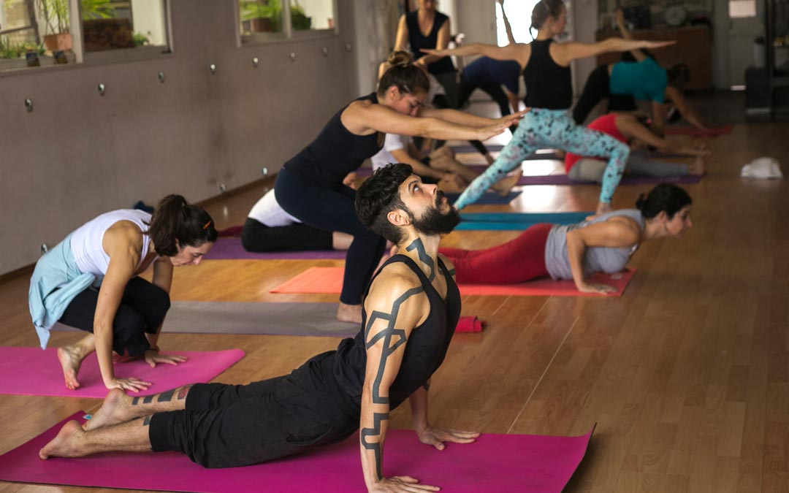

Gñana yoga

El gñana (‘conocimiento’) se aplica tanto en contextos sagrados como laicos. Vinculado con el término «yoga», se puede referir al aprendizaje o conocimiento conceptual, y a la más elevada sabiduría, visión intuitiva o gnosis; es decir, a una especie de conocimiento liberador o intuición.
Ashtanga vinyasa yoga

El ashtanga viniysa yoga o viniyasa yoga, enfatiza el viniasa (movimiento sincronizado con la respiración) mediante un método progresivo de series de posturas con una respiración específica (uyáii pranaiama). Funciona como una coreografía.
Yoga nidra
El yoga nidra es el estado de sueño en el que se cae durante la meditación.15Según la escritora Anandmurti Gurumaa, el yoga nidra es un estado de conciencia que se sitúa entre la vigilia y el sueño profundo. Es un estado en el que el cuerpo se mantiene relajado y la mente es consciente del mundo interior. El yoga nidra es también conocido como el sueño lúcido utilizado como herramienta de meditación.